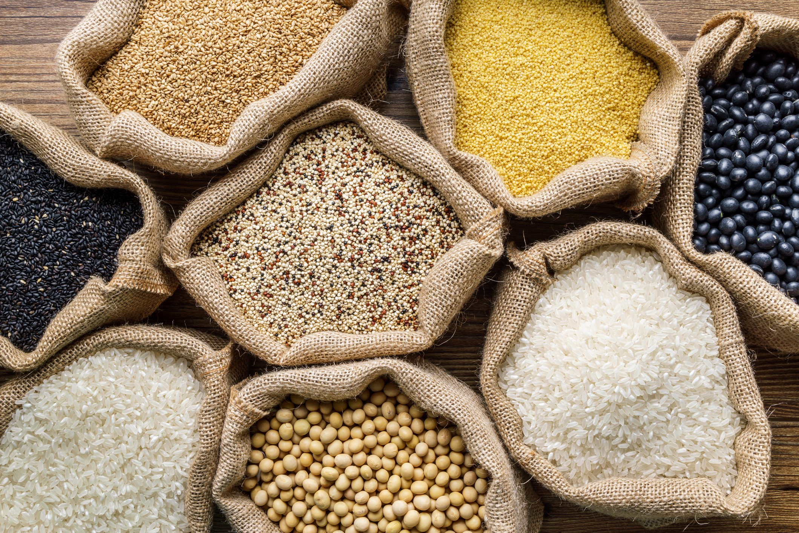

O Brasil atualmente ocupa a terceira posição no quesito
de exportação de
produtos agrícolas, sendo eles:

O problema está associado à má qualidade de armazenamento de grãos, como a
alta temperatura e umidade causando
deteriorização e ploriferação de insetos, fungos e microtoxinas.
Pensando no grande prejuízo desses produtos, desenvolvemos uma ideia em IoT
que ultiliza o sensor de temperatura e
umidade posicionados em silos, que fará o monitoramento das mesmas e caso alguma ultrapasse os limites explorados a solução irá fazer a regulagem, com isso,
a dimunuição na perda e aumento na qualidade sera essencial para a renda ser maior e a qualidade ser vantajosa.